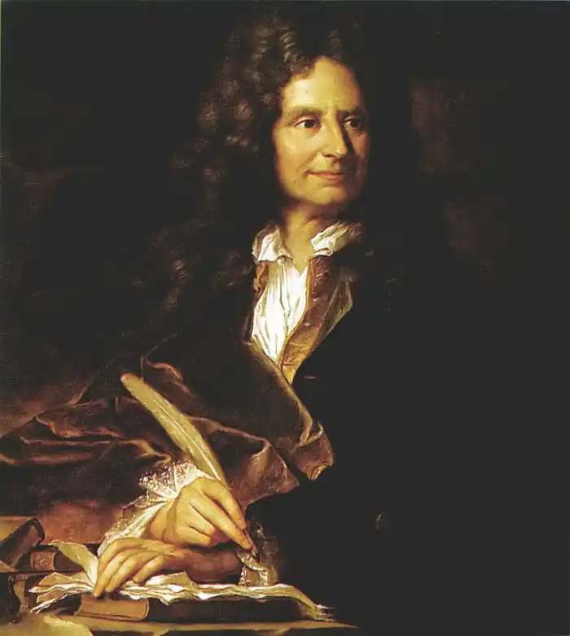

Нікола Буало-Депрео народився 1 листопада (29 травня — з інших джерел) 1636 у родині адвоката-буржуа, секретаря парламенту. Все своє життя прожив у Парижі, якщо не рахувати декількох виїздів на поля битв, – як придворного історіографа. Але не описом людської бійні стане він знаменитим для нащадків, а літературною війною "давніх і нових авторів"; не як хронограф ратних подвигів "короля-сонця" відомий він сучасникам, але захистом гнаних і приятелюванням з ними...
Звичайно, всього цього не можна стверджувати з вірогідністю, можна лише припускати, що саме так із ним і було насправді. Ні, анкетування нам не допоможе, краще спробувати методом від супротивного...
Хоча йому "суддівські з усіх боків рідня": брат успадкував посаду батька в суддівській палаті, його своячка одружена з адвокатом, та й він сам закінчив юридичний факультет, але не влаштовує його ця професія. Отримавши після смерті батька пристойну ренту, Нікола не бажає більше "надриватися, тягаючи казенні папери". Проте приймає на себе повноваження судді іншого роду – літературного критика. Ні, не відразу: адже потрібно ще довести обґрунтованість власних домагань – і він дебютує у віршованій сатирі (і поезія, і критика разом), жанрі аж ніяк не безлюдному в ті часи, який втратив колишні позиції за 50 років після смерті Матюрена Реньє. Хоча самому Депрео ближче Горацій, аніж Реньє, – пристрасті визначаються... Тоді ж, на початку 60-х років, він зближується з Мольєром, Расіном і Лафонтеном. В Отейле у Буало часто-густо збираються четверо друзів-поетів. Було б у нашого критика менше заслуг перед французькою літературою, вже за цей союз видатних імен він гідний пам'яті у потомстві. Але поки що ніхто навколо, ні самі вони не здогадуються про прийдешню велич. Жан Лафонтен – байкар зі світовою славою – поки лише дотепний співрозмовник і випадковий співак кількох од. Жан-Батист Мольєр вже скуштував перших плодів успіху в театрі, та ледь встигає відбиватися від наклепників і кредиторів, і найславетніші комедії – ще попереду. Його тезка Жан Батист Расін невдалий клірик – майбутній король трагедії – не написав навіть перших драм, але прогуляв вже не один гонорар – за оди, найбільш улюблений жанр при королівському дворі. Нарешті, сам господар будинку Нікола Буало – апологет і теоретик класицизму – поки автор дрібних віршів і кількох сатир, що зовсім не заважає йому судити сучасну словесність з усією суворістю... І тим, що не давав помилування іншим писакам, не економлячи на гострому дотепі, і тим, що взяв під захист інших поетів, він нажив собі чимало ворогів. І хіба що не брався за шпагу – що у ті "мушкетерські" часи зовсім не рідкість, незважаючи на найсуворішу заборону дуелей, – а вже на Парнасі був одним із найвідоміших бретерів. Це цілком у дусі часу, коли література легко пов'язувалася з політикою, а театральні вистави могли розколоти суспільство на ворогуючі табори. У драматичному турнірі між П'єром Корнелем, чия слава перевершувала і Расіна, який став світилом, що сходило, Буало був, звичайно, в рядах захисників останнього. Він, як міг, намагався підтримати друга, що занепав духом після провалу "Федри", провалу, підлаштованого знатними супротивниками за допомогою клакерів-найманців і невідомого драматурга Прадона (безвісного, поки не став мішенню сатиричних випадів Буало – і так можна ввійти в історію). Але ані десятирічний поєдинок двох видатних жерців Мельпомени, ані інтриги не завадили Нікола Депрео зробити те, що він зробив: у тяжку для Корнеля годину злиднів простягнути йому руку допомоги. Він купив у драматурга його останнє надбання, бібліотеку, залишивши її у довічне користування колишньому власникові. Можна уявити, яким зворушеним був патріарх трагедії таким проявом благородства. Серед мінливості смаків і меркантилізму немов ожив раптом світ лицарських почуттів, що сам Корнель півстоліття створював на сцені. Тепер вже поет міг відійти у світ інший, як олімпієць, впевнений у правоті справи життя... І не тільки Корнелю допоміг Буало подібним чином. Він ніби знав, що переживе їх усіх. Але не припускав, свідком чого належить йому стати. Але про це пізніше, ми і так забігаємо вперед. Хоча будинок в Отейле – штаб французької словесності – окрім чотирьох поетів відвідувала іноді й більш різноманітна публіка, він не був у повному розумінні літературним салоном, якими також відомий Париж того часу. У письменників вони не були в пошані (один виняток – каліка Скаррон), хоча так важко відрізнити письменників-професіоналів від інших у суспільстві, де кожен щось писав, всяк відстоював у суперечці вірність власного судження... Даниною часу і справжнім виявом смаку були аристократичні салони: в них читалося і слухалося, хвалилося і лаялося все, що ставало надбанням гласності. Буваючи на зборах своїх знаменитих приятельок, маркізи де Сабле, мадам Севіньї або мадам Ла Саблієр, наші друзі зійшлися з письменниками-аристократами. Потоваришували з віконтом Гійерагом – дипломатом і таємним автором "Португальських листів", які нещодавно вийшли друком – світським красенем, законодавцем моди, чиї гостроти передавалися з уст в уста. Познайомилися і з легендарним фрондером герцогом Ларошфуко – творцем гучних "Мемуарів", скептичним і люб'язним, який віддавав перевагу відвертій бесіді з жінкою вченій розмові з чоловіком... Слід згадати і прекрасну частину суспільства. Не тільки великосвітські красуні, але й дами півсвіту грали в житті епохи помітну роль. Саме вони пробуджували спрагу слави у воїнів і поетів. Примхи їх обходилися дорого, але оцінювали себе вони ще дорожче. Багато з них увійшли в історію як автори літературних спроб (на кшталт подруги Ларошфуко мадам Лафайєт), або як героїні літератури наступних століть (як Маріон Делорм), і, слово честі, життя кожної з них гідне гарного роману, або, врешті, як учасниці політичних інтриг (це ряд занадто довгий – згадаймо лише герцогиню де Лонгвіль, сестру видатного Конде, теж близького друга Ларошфуко – одну з натхненниць Фронди, яка постійно розпалює честолюбство антироялістів)... Що ж до Буало, то він, як справжній син галантного століття, не тільки цілував ручки і схиляв коліна, вдаючись до знатного заступництва, а й полонив серця палкими промовами. Проте потім розчаровував своїх доброзичливець тим, що не поспішав зайняти місце серед залицяльників. Так, він порушував неписане правило вищого світу, чим і здобув собі репутацію великого оригіналу: мовляв, з усіх жінок він любив одну лише Музу... Чи так було насправді, чи це чергова вигадка супротивників поета, тепер важко судити. В усякому разі, його випади проти світських манірниць зовсім не схожі на жінконенависництво і пов'язані все з тією ж боротьбою за природність в літературі – на противагу солодкавої чутливості салонних авторів, серед яких було чимало дам. Якщо він не приніс жертви на вівтар любові, то данину дружбі віддав сторицею і заради неї готовий був на будь-що. Чого тільки не робив Буало, щоби помирити дорогих його серцю Расіна і Мольєра. Чи його провина, що сварка та виявилася сильнішою за нього і заглухла, лише коли "дощата труна і жменя землі сумної сховали назавжди Мольєра прах опальний"? Проте, в примиренні Расіна з його колишніми наставниками, "суворими відлюдниками Пор-Рояля", він досяг успіху. Двічі відмовляв друга від виступу проти "цих найчесніших людей нашого часу", до того ж переслідуваних і Двором, і єзуїтами. Тепер, коли Паскаль помер і янсеністи піддалися новим перевіркам, послання проти них "можуть зробити честь розуму автора, але нітрохи не зроблять честі його серцю". Зрештою мир буде досягнутий, і Расін навіть напише "Коротку історію Пор-Роялю", в якій віддасть належне людям, колись ним скривдженим... Коли ж батьківство визначити важко, а кандидатів на цю роль кілька, кожен з них, як правило, намагається благородно піти в тінь, поступаючись місцем. З цим же немовлям, якого згодом назвуть Класицизмом, схоже, все було інакше: кожен прагнув додати штрих до його рис, а після обґрунтувати права на весь портрет. Матір'ю його була Епоха – в боротьбі з аристократією дужчав абсолютизм, а батьками – і Малерб, і Корнель, і навіть Шамплен (це лише найпомітніші постаті з довгого списку кандидатур, а ще Пуссен – у живописі, Люллі – в музиці)... Тепер, у другій половині століття, змужнілому мистецтву не вистачає часом лише гарних манер. І Буало своєю діяльністю 70-х років – "Трактатом про прекрасне" і особливо "Поетичним мистецтвом" – поспішає усунути деякий несмак і додати блиску теорії. Саме "Поетичному мистецтву" – черговому маніфесту школи, де Аристотелева "Поетика" і Горацієве "Мистецтво поезії" приведені у відповідність із сучасною філософією, судилося на довгі роки стати катехізисом класицизму в усій Європі. Відтепер авторитет поета як глави напряму і законодавця Парнасу стає непорушним. Особливо після заохочення Людовика: "В поезії пан Депрео розбирається краще, ніж я". Звичайно, для нас думка цезаря – не більш ніж свідчення одного із сучасників, але думка важлива. Нам, у яких склався стереотип недоумків на троні, важко уявити, що монарх може проявити справжній смак до прекрасного або гідно оцінити аттичну сіль комедії. Король цей цінував у наближених не тільки вишуканість манер, а й вишуканість складу; головним скарбником Франції, наприклад, був призначений поет Расін, змінивши на цій посаді поета Шаплена, а з 1677 року саме Расін і Буало стають історіографами Його Величності. Нащадки часто пред'являли Буало претензії, що він, мовляв, залишив у спадок сукню дуже тісну, до того ж ту, що вийшла з моди, і силою авторитету змусив її носити. Як же гірко було йому на схилі років стати свідком, як живий, творчий метод обернувся догмою у педантів, як епігони природність поставили на ходулі, і як колись одягнений у пурпурну тогу герой пнеться тепер у костюмі Скарамуша? А якби йому ще знати, що саме вчені педанти, кого висміював і з ким воював за життя, і стануть хранителями його теорії... Їх і ототожнять згодом із самим Буало. Не пишіть трактатів, поети... Що ж до нащадків, то вони занадто довго схилялися перед смаком Буало, і чи варто дивуватися, що, захотівши скинути пута зжитої естетики, першим, у кого вони вирішили кинути камінь, став Нікола Депрео? І в розв'язаній війні між романтиками і класицистами на початку вже ХІХ століття кожен бік користувався аргументами з арсеналу того ж Буало – найчастіше обігравали рядки одного віршованого послання: "Лише в правді краса, лише правда нам мила..." Кожен хотів причаститися її дарами.